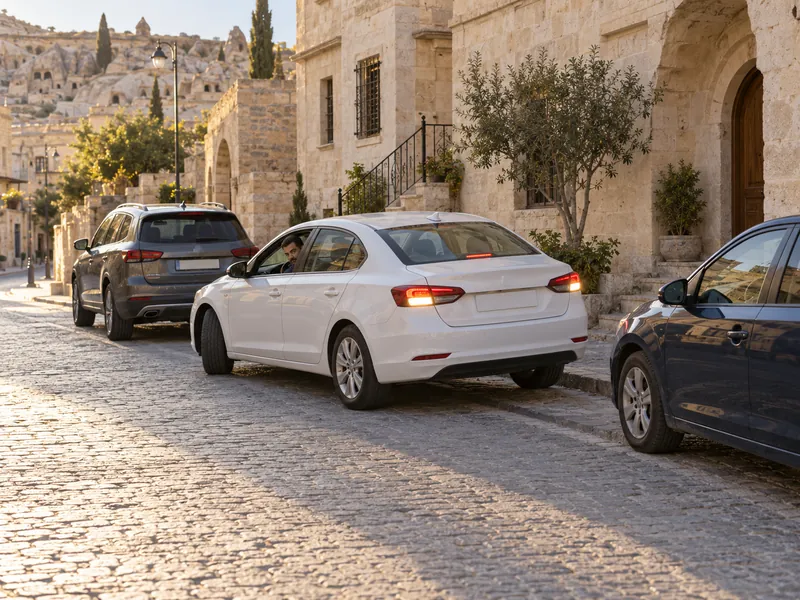

Park ve duraklama
Aracı park edeceğin numaralı yere dokun (ya da 1–5 tuşları); araç oraya geri geri park eder, kurala aykırıysa ceza yersin. Bir yerin üstüne gelince en yakın durak, musluk, geçit ya da kavşağa uzaklığı görürsün. Hedef: 4 doğru park.
Trafik ve ÇevreKonu 10 / 1730 çıkmış soruUygulamalı
Durma, duraklama ve park etme kavramlarının farkını; duraklamanın ve park etmenin yasak olduğu yerleri ve mesafeleri, park ederken ve yolda arızalanan araçta alınması gereken önlemleri anlatır.

Bir aracın trafikte hareketsiz kalması üç ayrı kavramla ifade edilir. Hangisinin geçerli olduğu, aracın neden ve ne kadar süreyle durduğuna bağlıdır.
| Kavram | Tanımı | Örnek |
|---|---|---|
| Durma | Aracın trafik zorunlulukları nedeniyle durdurulması | Kırmızı ışıkta beklemek, görevlinin dur işaretine uymak, yolun trafiğe kapanması, öndeki aracın durması, aracın arızalanması |
| Duraklama | Durma hâlleri dışında yolcu indirip bindirmek, yük yükleyip boşaltmak veya beklemek amacıyla aracın kısa süre durdurulması | Yolcu indirmek, paket teslim etmek |
| Park etme | Aracın durma ve duraklama hâlleri dışında, genellikle uzun süre bekletilmek üzere bırakılması | Aracı otoparka bırakmak, 5 dakikadan uzun beklemek |
Bekleme amacıyla yapılan duraklama en çok 5 dakika sürebilir; bu süre aşıldığında araç park edilmiş sayılır. Motorun çalışıyor olması veya araçta birinin bulunması bu durumu değiştirmez.
Taşıt yolu üzerinde aşağıdaki yerlerde duraklamak yasaktır:
Yerleşim yeri dışındaki kara yollarında, zorunlu hâller dışında taşıt yolu üzerinde duraklamak ve park etmek yasaktır. Banket taşıt yolunun dışında kaldığı için duraklamaya uygundur. Yolcular, aksine bir işaret yoksa yolun en sağ kenarında ve aracın sağ tarafından indirilip bindirilir.
Duraklamanın yasak olduğu her yerde park etmek de yasaktır. Bunlara ek olarak:
Eğimli yol kesimleri tek başına park yasağı kapsamında değildir; gerekli önlemler alınarak park edilebilir. Park yerlerinde araç, çizgilerle belirlenmiş bölmenin içine, çizgilere taşmadan ve tek bölmeyi kullanacak şekilde bırakılır.
Normal bir park işleminde acil uyarı ışıklarının (dörtlü flaşör) yakılmasına gerek yoktur; bu ışıklar arıza ve tehlike durumları içindir. Park lambası da her parkta değil, gece ve görüşün yetersiz olduğu hâllerde gerekir. Uzun süre beklemeyi gerektiren duraklamalarda da motor durdurulup el freni çekilir.
Duraklama veya park yerinden çıkan sürücü aracın çevresini kontrol eder, ışıkla veya kolla çıkış işareti verir ve yolda seyreden araçlara yol vererek uygun anda harekete geçer. Yoldaki sürücüleri uyarıp yavaşlamaya zorlamak kurala aykırıdır.
Yerleşim yeri dışında taşıt yolunda arızalanan araç; itme, çekme gibi imkânlar kullanılarak önce yol dışına, bu mümkün değilse bankete, o da olmuyorsa taşıt yolunun en sağına alınır ve işaretlenir.
Okuduğunuz kuralı ekranda uygulayın. Hedefi tamamlayınca uygulama biter; hatasız bitirirseniz 3 yıldız alırsınız.
Aracı park edeceğin numaralı yere dokun (ya da 1–5 tuşları); araç oraya geri geri park eder, kurala aykırıysa ceza yersin. Bir yerin üstüne gelince en yakın durak, musluk, geçit ya da kavşağa uzaklığı görürsün. Hedef: 4 doğru park.
MEB sınavlarında bu konudan çıkmış 30 soru (2 tanesi en az üç sınavda soruldu). Her soruda doğru cevabı ve açıklamasını hemen görürsünüz.
Hangi sorular?
Sıralama